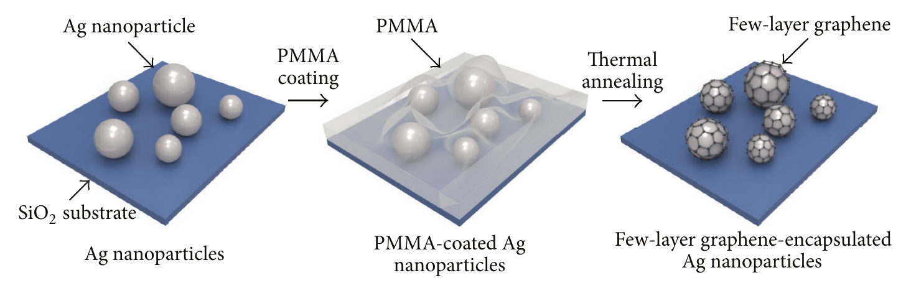

연구의 배경
은 나노입자를 얇은 그래핀으로 덮어 라만 분광 분석용 표면을 보호하는 방법입니다. 공기 중 열처리 뒤의 산화와 염료 분광 신호를 측정해 보호 효과와 분석 기능을 함께 살펴봤습니다.
무엇을 어떻게 했나요?
PMMA를 탄소원으로 사용해 은 나노입자 위에 수층 그래핀을 만들고, 대기 중 열처리 뒤 산화와 로다민 6G(R6G)의 라만 신호 변화를 평가했습니다.
고체 탄소원으로 성장 중 입자 응집을 줄이고, 얇은 보호층으로 표면증강 라만 분광(SERS) 신호를 유지하도록 설계했습니다.

PMMA를 탄소원으로 사용해 은 나노입자 위에 수층 그래핀을 형성하는 세 단계 제조 과정을 보여 줍니다.
Jaehong Lee et al. (2015). “Highly Stable Surface‐Enhanced Raman Spectroscopy Substrates Using Few‐Layer Graphene on Silver Nanoparticles”. Figure 1. DOI: 10.1155/2015/975043. Creative Commons Attribution. 읽은 PDF에는 라이선스 버전이 명시되지 않았습니다. 원본 PDF에서 전체 그림 영역을 잘라 사용했으며 그림 내용은 변경하지 않았습니다.
원그림과 원문 설명 ↗ · DOI: 10.1155/2015/975043 ↗ · Creative Commons Attribution; version not specified in the read PDF ↗
남은 질문과 한계
열 산화에 대한 내성이 복잡한 시료와 장기 보관에서도 이어지는지는 더 살펴볼 질문입니다.
비교할 때 살펴볼 조건
입자 크기와 피복층 구조, 열처리 이력, 분석물 농도와 라만 광학 조건을 맞춰 비교해야 합니다.
함께 읽을 연구
Shell-isolated nanoparticle-enhanced Raman spectroscopy
관련 SHINERS 연구의 초록은 실리카·알루미나로 코팅한 금 입자로 응집과 시료의 직접 접촉을 제한하는 방법을 다룹니다. 그래핀 보호층을 쓰는 이 연구와 보호 기능·광학 접근의 균형을 비교할 수 있습니다.
은과 금의 차이, 보호층 재료와 측정 구조가 달라 신호 증강 배수를 바로 비교하기는 어렵습니다.
초록을 참고한 소개RESEARCH NEWS
연구 소식
해설에 사용한 자료
이 해설은 논문 본문과 원그림을 참고합니다. 보충자료와 원자료의 별도 검토는 완료하지 않았습니다.